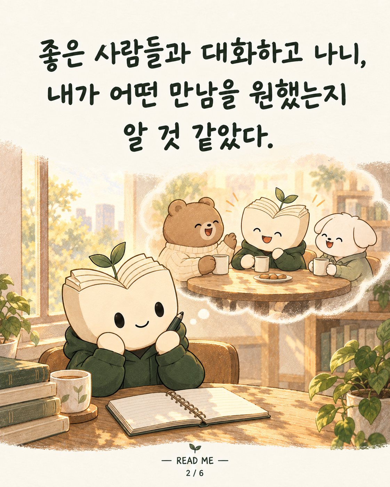
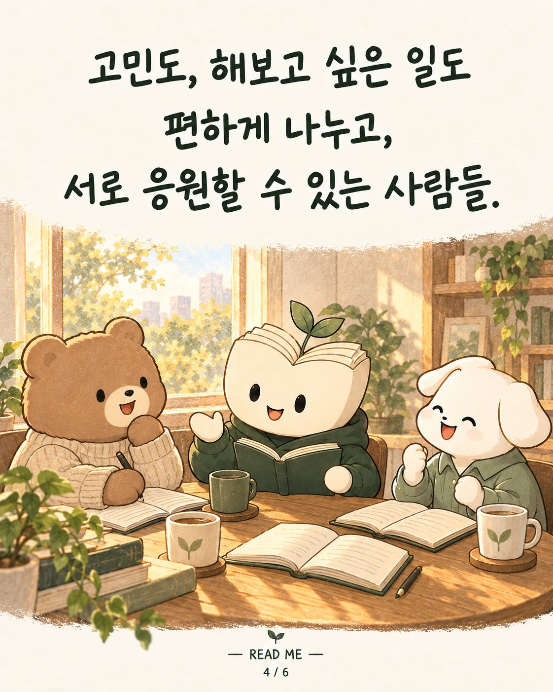
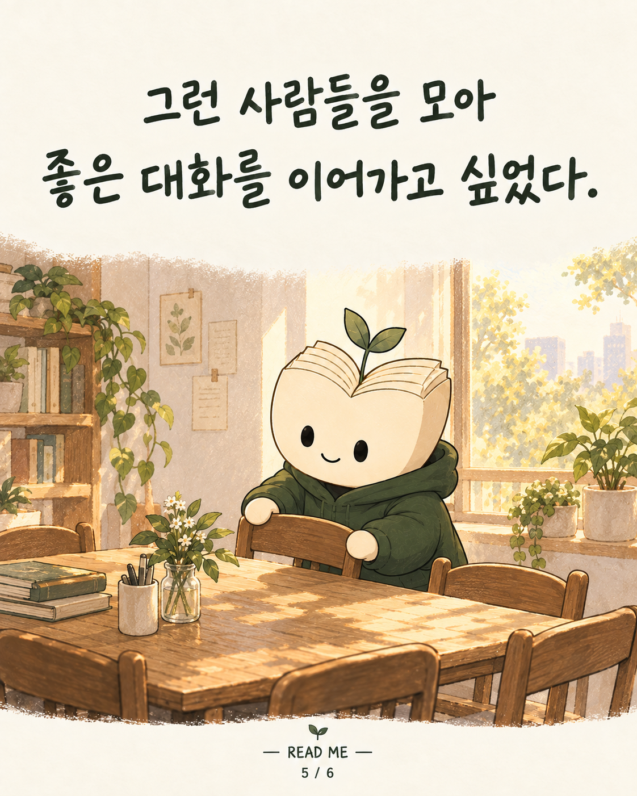
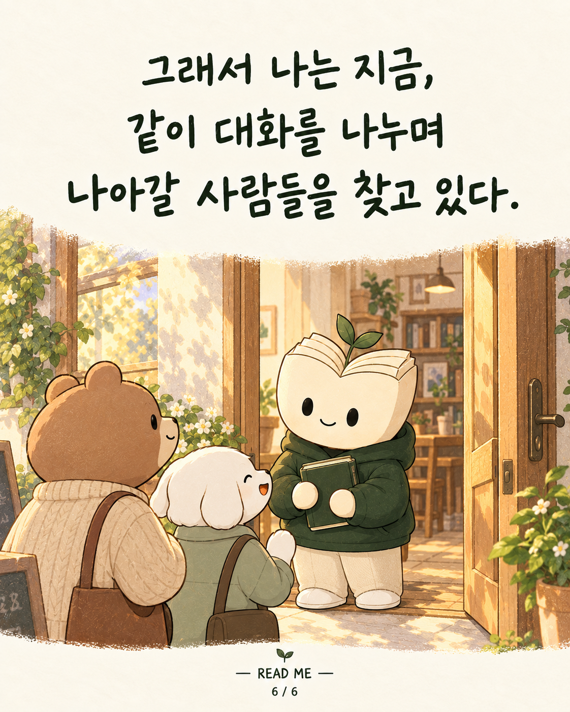

READ ME · 리미 인스타툰 3편
같이 나아갈 사람들을 만나고 싶어서

좋은 사람들과 대화하고 나니, 내가 어떤 만남을 원했는지 알 것 같았다.
서로의 이야기를 존중하고, 관계를 소중하게 여기는 사람들.

고민도, 해보고 싶은 일도 편하게 나누고, 서로 응원할 수 있는 사람들.

그런 사람들을 모아 좋은 대화를 이어가고 싶었다.

그래서 나는 지금, 같이 대화를 나누며 나아갈 사람들을 찾고 있다.